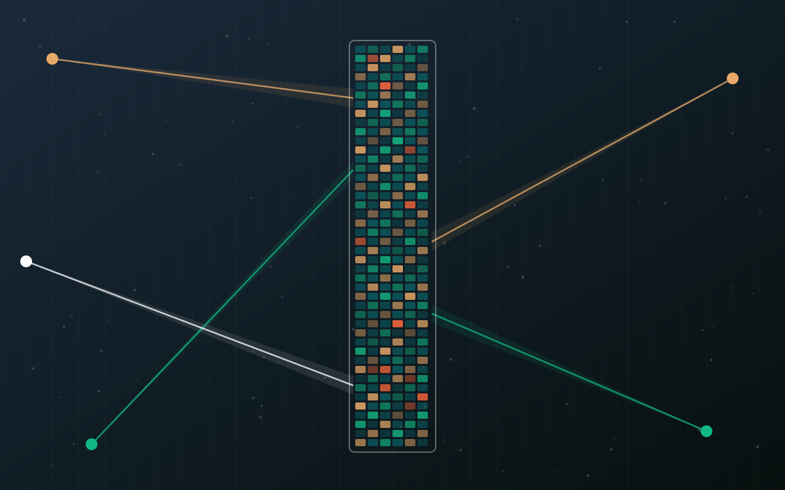

The Signal · Issue 10 · Cover story · Frontier Models
A proof of the Riemann hypothesis, written with Claude, was certified within a day. Nobody had to trust Claude
On 20 November an Anthropic mathematician released a 17-million-line proof written in Lean, a language in which a computer checks every step. By the next afternoon the Lean and Mathlib communities had certified it, using independent rebuilds and several separately written proof checkers. For anyone asked to accept an AI system's answer, the method matters more than the model.

Facts are attributed and linked to their sources. The analysis and opinions are the author's own.
What it is
On Friday 20 November Levent Alpöge, a mathematician at Anthropic, posted a two-page note saying he believed he had, "working with Claude", found a proof of the Riemann hypothesis, and that the method extends to the Generalized Riemann Hypothesis. He did not publish a conventional paper. He released the proof as a library in Lean, a programming language in which a computer checks every step of a mathematical argument. According to the Lean community, the library runs to about 17 million lines of code; Michael Rubinstein of the University of Waterloo counts 175,187 files.
The hypothesis, proposed by Bernhard Riemann in 1859, is about how prime numbers are distributed. It is one of the seven Millennium Prize problems chosen by the Clay Mathematics Institute, which offers $1 million for each, the Guardian notes.
On Saturday 21 November the Lean and Mathlib communities published a joint statement, endorsed by the Lean Focused Research Organization and the Mathlib Initiative: "We have full confidence that Alpöge's proof of the Riemann Hypothesis is correct." They said all four tests set out on the Xena Project blog nine days earlier had been passed. The statement being proved is Mathlib's own RiemannHypothesis, already vetted by experts. Dozens of people compiled the library and reproduced the same proof export. Two independent tools confirmed that the theorem proved is exactly Mathlib's statement. And the exported proof was accepted by several proof checkers, including Lean's official kernel and two, con-leche and con-ron, that come with a formal proof that they cannot accept a false proof. Those checks ran on an inert export, out of reach of any malicious code hidden in the source.
Individual mathematicians also published their own runs. MIT's Andrew Sutherland, who ran his checks with Claude Code, reports that all 175,187 modules compile with zero errors, that the headline theorems rely only on Lean's three standard axioms, and that a rebuild in a sandbox with no network, on a separate machine, reproduced the 61.6-billion-byte export byte for byte. Rubinstein reported the same four checks passing on Waterloo's servers.
Why it matters
The speed is the story. A claimed proof of a famous problem normally means months or years of expert reading. This one earned a public certification in about a day, and not because anyone trusted Claude or Alpöge. The checking did not depend on either of them. The Xena post that set the tests explains why the tests matter. Of the 290 papers OpenAI released with Lean code in October, it says, around 38 came with Lean code that did not even state the paper's main theorem, though OpenAI never claimed that it did.
Nobody had to trust the model. They had to trust the statement, and several checkers that do not share a single point of failure.
Most AI output in a bank cannot be checked this way. There is no machine proof that a credit memo is sound. But some of it can: reconciliations, rule-based eligibility decisions, regulatory return calculations, code changes. For that work, the lesson is to invest in the check rather than in evaluating the model. And the hardest of Xena's four questions is the first one: does the formal statement say what you meant? In a bank, that is the specification, the policy rule as it was turned into code. A perfect checker of the wrong specification certifies the wrong thing. Issue 09 made the same point about DeepMind's verified encryption code: people still had to define "secure".
The second lesson is that checked is not the same as understood. Alpöge writes that it is "routine to produce a huge, unreadable document containing sufficient detail", and that he intends "to understand and impart understanding of this argument". Rubinstein's 164-page working guide, written with Claude, Codex and Gemini, explains the proof for the Riemann zeta function but takes one central inequality, which it calls (M), from the Lean code without proving it in prose. For a bank asked why its system declined a loan, a correct answer that nobody can explain is still a governance problem.
Two cautions. Alpöge's note came a day after Anthropic listed on Nasdaq; he calls the timing "horrible", and the Guardian reports some mathematicians' unease at AI companies spending heavily to solve famous problems. And as of 04:35 UTC on 22 November, Sutherland's page listed some checks, including Lean's default and "paranoid" kernels on the full export, as still running.
What I'd watch
- Whether the checks still listed as running on Sutherland's page finish without a rejection.
- Whether a human-readable proof of the central inequality appears, and how quickly the argument is simplified, as Alpöge expects.
- Whether AI vendors selling to banks start offering independently checkable evidence for their outputs, rather than benchmark scores.
Sources
- Note announcing the proof (remark.pdf) Levent Alpöge, 20 Nov 2026.
- Lean verification of the Riemann Hypothesis Lean community blog, joint statement endorsed by the Lean FRO and the Mathlib Initiative, 21 Nov 2026.
- “…and the proof is checked in Lean” Xena Project, 12 Nov 2026.
- RH Lean proof: verification files Andrew Sutherland, MIT, updated 22 Nov 2026.
- Alpöge/Claude proof of the Generalized Riemann Hypothesis Michael Rubinstein, University of Waterloo, 21 Nov 2026.
- Two groups verify mathematician’s claim that Claude helped prove mathematics problem The Guardian, 21 Nov 2026.